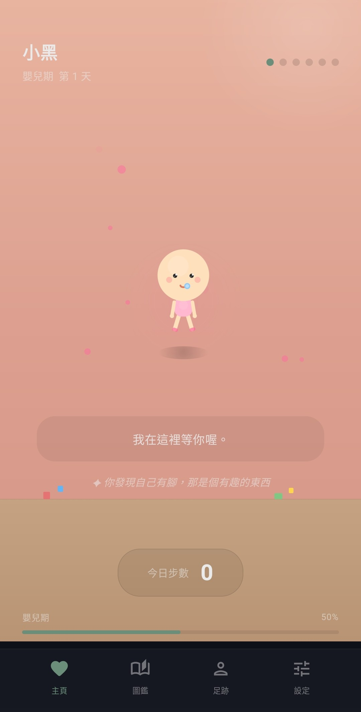
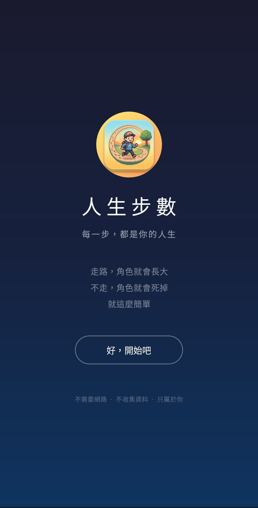
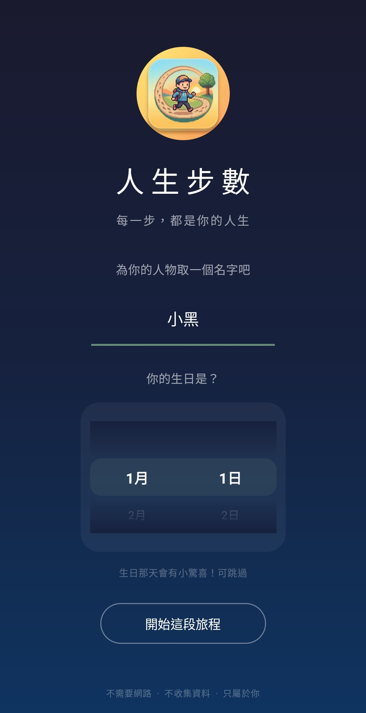
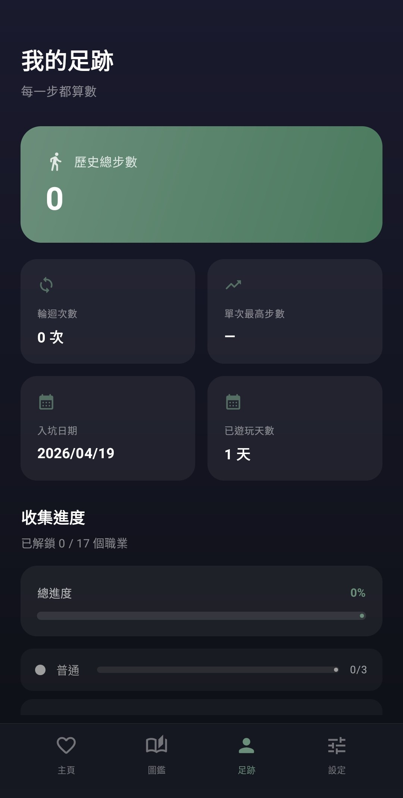
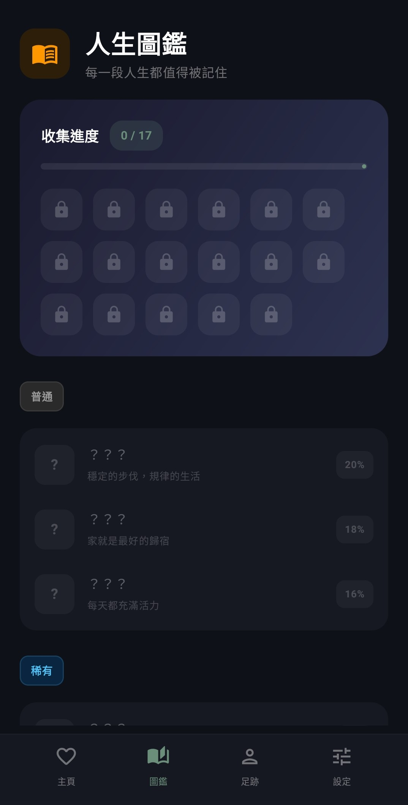
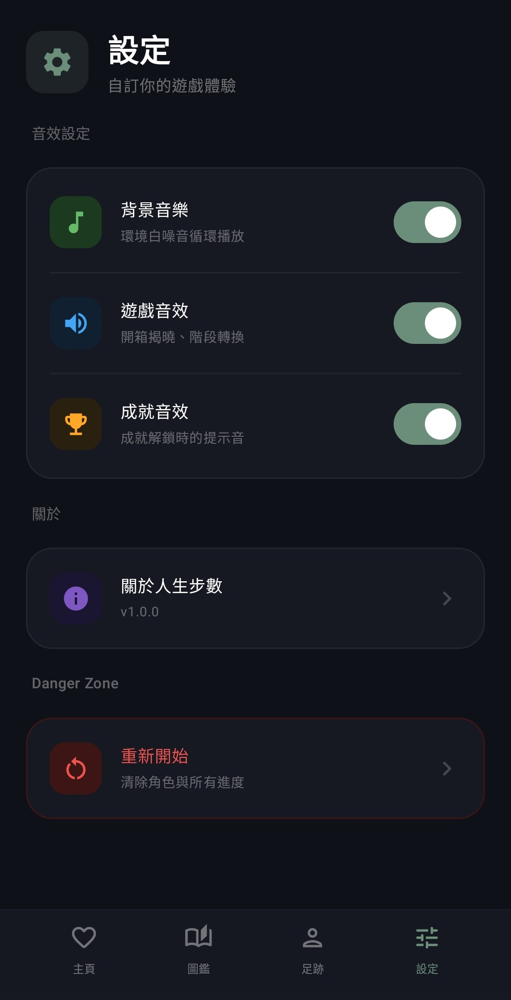

一款 Android 計步養成小遊戲 — 你走的每一步，都是角色的一段人生。
從嬰兒出生、成長、職業、變老、死亡，最後輪迴重來。
僅支援 Android 8.0 以上｜v1.0.0｜約 30 MB ｜iPhone / iPad 無法安裝

人生步數是一款結合「真實計步器」與「人生養成」的手機小遊戲。你用手機走路，每一步都會推進角色的人生 — 從嬰兒到死亡，一生 25 天。
沒有戰鬥、沒有付費、沒有廣告，是一個讓你重新思考「走路」這件事的療癒小品。
每個階段都有專屬的角色外觀、場景與配色，用 Compose Canvas 手繪。





| 作業系統 | Android 8.0（API 26）以上 |
| iOS 支援 | 不支援（iPhone / iPad 無法安裝） |
| 檔案大小 | 約 30 MB |
| 網路 | 不需要（完全離線運作） |
| 權限 | 活動辨識（計步）、通知（成就提示） |
| 費用 | 完全免費、無廣告、無內購 |
v1.0.0 ｜ Android 8.0+ ｜ 約 30 MB